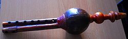

The pungi also called the been, is a wind instrument played by snake charmers
in India and Pakistan. The instrument consists of a mouth-blown air reservoir
made from a gourd, which channels air into two reedpipes. The pungi is played
with no pauses, with the player employing circular breathing. The pungi
originated in India and is still played by snake charmers in street
performances.
The pungi was originally developed as an Indian folk music instrument, and is
still important for religious purposes and music in India. The pungi was popular
in the Badagutittū about fifty years ago. However, prior to this it derived from
Indian folk music and was used for religious purposes for snake charming.

Construction:
The pungi is traditionally made from a dried bottle gourd. Often, the neck of
the gourd is carved for aesthetic reasons. On the other end, two reed or bamboo
pipes are connected. These are known as the jivala. One of the pipes has seven
holes and plays the melody; the other pipe is for drone. The jivala is fitted to
the gourd with beeswax, which can be adjusted for pitch modification.
Usage:
Indian musical practices often coincide with religious ideals. An example would
be the comprehensive practice of mantra incantation, which can be defined as a
succession of syllables (with or without meaning) used to create prayer to a
supernatural force or deity. The pungi is believed to be one of the many ways in
which one can communicate with the gods through devotional genres.